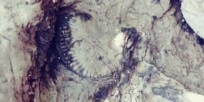

Rock Point Provincial Park
Rock Point Provincial Park is a park located on the north shore of Lake Erie near the mouth of the Grand River in the Carolinian zone of southwestern Ontario.The beach is exposed fossils of a coral reef dating back to over 350 million years embedded in limestone.

